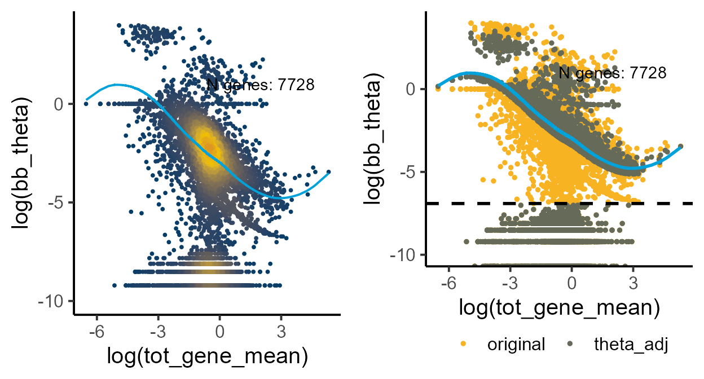

dynamic_allelic_changes.Rmd
#loading required libraries
library(ASPEN)
#> Loading required package: doParallel
#> Loading required package: foreach
#> Loading required package: iterators
#> Loading required package: parallel
#> Loading required package: locfit
#> locfit 1.5-9.9 2024-03-01
#> Loading required package: ggplot2
#> Loading required package: ggthemes
#> Loading required package: ggsci
#> Loading required package: ggpointdensity
#> Loading required package: ggExtra
#> Loading required package: ggrepel
#> Loading required package: ggpubr
#> Loading required package: assertthat
#> Loading required package: zoo
#>
#> Attaching package: 'zoo'
#> The following objects are masked from 'package:base':
#>
#> as.Date, as.Date.numeric
#> Loading required package: dplyr
#>
#> Attaching package: 'dplyr'
#> The following objects are masked from 'package:stats':
#>
#> filter, lag
#> The following objects are masked from 'package:base':
#>
#> intersect, setdiff, setequal, union
#> Loading required package: data.table
#>
#> Attaching package: 'data.table'
#> The following objects are masked from 'package:dplyr':
#>
#> between, first, last
#> The following objects are masked from 'package:zoo':
#>
#> yearmon, yearqtr
#> Loading required package: VGAM
#> Loading required package: stats4
#> Loading required package: splines
library(gridExtra)
#>
#> Attaching package: 'gridExtra'
#> The following object is masked from 'package:dplyr':
#>
#> combine
library(openxlsx)Like for other vignettes, we use mouse brain organoids data from CastB6 hybrids. The pseudotime for this data was estimated using palantir and we select three cell types, representing an early neurodevelopment: radial glial cells (RGCs), intermediate progenitors cells (IPCs), deep layer neurons (cortical neurons).
data("Cast_B6_a1")
data("Cast_B6_tot")
load_file <- system.file("extdata", "Cast_B6_cell_annot.xlsx", package = "ASPEN")
cell_annot <- read.xlsx(load_file, rowNames = T)
#loading pseudotime assignment
load_time <- system.file("extdata", "pseudotime_CastB6.xlsx", package = "ASPEN")
pseudotime <- read.xlsx(load_time, rowNames = T)
head(pseudotime)
#> cell_id time
#> 38 clone2_TACAGGTCAGAGATGC 0.01416797
#> 45 clone1_CTCATGCAGAGATCGC 0.01620139
#> 51 clone1_TAGGTACTCAACCCGG 0.01671255
#> 52 clone2_GACAGCCCAAACGTGG 0.01674076
#> 55 clone1_TCCGATCAGTGGTCAG 0.01755734
#> 60 clone2_AATCACGTCCCTCTAG 0.01817998We select the barcodes for the cell types that have pseudotime estimates.
Cast_B6_a1 <- Cast_B6_a1[,colnames(Cast_B6_a1) %in% pseudotime$cell_id]
Cast_B6_tot <- Cast_B6_tot[,colnames(Cast_B6_tot) %in% pseudotime$cell_id]Remove low-expressed genes that have counts in less than 10 cells
#Remove low-expressed genes which have less than 10 cells
Cast_B6_tot <- Cast_B6_tot[rowSums(Cast_B6_tot > 1) >= 10,]
Cast_B6_a1 <- Cast_B6_a1[rownames(Cast_B6_tot),]Dividing pseudotime vector into five equal-sized groups
pseudotime <- pseudotime[match(colnames(Cast_B6_tot), pseudotime$cell_id),]
pseudotime$group <- cut(pseudotime$time, breaks=c(quantile(pseudotime$time, probs = seq(0, 1, by = 0.2))))
pseudotime$group[is.na(pseudotime$group)] <- levels(pseudotime$group)[1]
#adding cell ids to pseudotime obejct row names
rownames(pseudotime) <- pseudotime$cell_id
head(pseudotime)
#> cell_id time group
#> clone1_AAACGAACATGTGCTA clone1_AAACGAACATGTGCTA 0.54637887 (0.541,0.566]
#> clone1_AAAGAACCACCTGCAG clone1_AAAGAACCACCTGCAG 0.80244252 (0.594,1]
#> clone1_AAAGGATGTACTCCGG clone1_AAAGGATGTACTCCGG 0.66697138 (0.594,1]
#> clone1_AAAGTCCAGCAATTCC clone1_AAAGTCCAGCAATTCC 0.60795731 (0.594,1]
#> clone1_AAAGTCCAGTGCTACT clone1_AAAGTCCAGTGCTACT 0.65369790 (0.594,1]
#> clone1_AAAGTCCGTAACCCGC clone1_AAAGTCCGTAACCCGC 0.04151659 (0.0142,0.424]
table(pseudotime$group)
#>
#> (0.0142,0.424] (0.424,0.541] (0.541,0.566] (0.566,0.594] (0.594,1]
#> 685 685 684 685 685We start by estimating beta-binomial distribution parameters for each gene across all cells. Theu will be used for the likelihood calculation under - assumes no differences over pseudotime.
global_params <- estim_bbparams(Cast_B6_a1, Cast_B6_tot, min_cells = 5, cores = 6)
global_shrunk <- correct_theta_bygroup(global_params, delta_set = 50, N_set = 30, thetaFilter = 0.001)Checking that the order of genes in the count matrix and the parameter estimates object is the same.
Visualizing the local model fit and the shrunk dispersion estimates
fit_plot <- plot_disp_fit_theta(global_shrunk, midpoint = 200)
shrunk_plot <- plot_disp(global_shrunk) +
geom_hline(yintercept = log(1e-03), linetype = "dashed", linewidth = 1)
grid.arrange(fit_plot, shrunk_plot, ncol = 2)
#> Warning: Removed 31 rows containing non-finite outside the scale range
#> (`stat_pointdensity()`).
#> Warning: Removed 1 row containing missing values or values outside the scale range
#> (`geom_line()`).
#> Removed 1 row containing missing values or values outside the scale range
#> (`geom_line()`).Under alternative hypothesis, we assume that the alellic distributions are different between the time points, so we repeat the estimation and dispersion shrinkage steps for each group separately
#Estimating distribution parameters
group_params <- estim_bbparams_bygroup(Cast_B6_a1, Cast_B6_tot, metadata = pseudotime, split.var = "group", min_cells = 5, cores = 6)
#removing groups where optim did not converge
group_params <- group_params[!is.na(group_params$bb_theta),]
group_params <- as.data.frame(group_params)
shrunk_group_params <- correct_theta_bygroup(group_params, delta_set = 50, N_set = 30, thetaFilter = 0.001)Visualizing the local model fit when each group-level observations are treated as independent variables.
fit_plot_group <- plot_disp_fit_theta(shrunk_group_params, midpoint = 800) +
ylim(-10, 4)
shrunk_plot_group <- plot_disp(shrunk_group_params) +
geom_hline(yintercept = log(1e-03), linetype = "dashed", linewidth = 1) +
ylim(-10, 4)
grid.arrange(fit_plot_group, shrunk_plot_group, ncol = 2)
#> Warning: Removed 482 rows containing non-finite outside the scale range
#> (`stat_pointdensity()`).
#> Warning: Removed 17 rows containing missing values or values outside the scale range
#> (`geom_point()`).
#> Warning: Removed 4 rows containing missing values or values outside the scale range
#> (`geom_point()`).
ASPEN requires the estimation for each gene to be provided as a separate data frame. This can be done by splitting the group estimates object by gene.
group_params_list <- split(shrunk_group_params, f = shrunk_group_params$gene)
#re-ordering to match order of genes in the count matrices
group_params_list <- group_params_list[rownames(Cast_B6_tot)]
#Checking that the order of genes in the count matrix and the group-level parameter estimates object is the same
table(names(group_params_list) == rownames(Cast_B6_tot))
#>
#> TRUE
#> 1546Checking that the order of genes in global and group-level parameter estimates objects are the same.
pseudot_change <- allelicSwitch(Cast_B6_a1, Cast_B6_tot, min_cells = 5, metadata = pseudotime, split.var = "group", estimates = global_shrunk, estimates_group = group_params_list)For genes in which the quality cut-off threshold (here we used a minimum of five cells with at least of five mapped reads) was not met, the inference is not performed, Those genes have NA values in the fields specified above. We remove those genes and calculate fdr’s.
pseudot_change <- pseudot_change[!is.na(pseudot_change$pval),]
#at which time point the variation in allelic ratio's deviates from the expected levels
#p-values for each time bin are the last five column, so p.adjust is applied to all of them
pseudot_change[,35:39] <- lapply(pseudot_change[,30:34], function(q) p.adjust(q, method = "fdr"))
colnames(pseudot_change)[35:39] <- paste0("fdr_bin", seq(1:5))
#allelic distribution changes over time
pseudot_change$fdr_mean <- p.adjust(pseudot_change$pval, method = "fdr")
#variance changes overtime, whilst keeping the mean AR constant
pseudot_change$fdr_var <- p.adjust(pseudot_change$pval_var, method = "fdr")Top 10 genes with significant changes in allelic distribution over pseudotime
pseudot_change <- pseudot_change[order(pseudot_change$fdr_mean),]
pseudot_change[1:10, c("mu_global", colnames(pseudot_change)[grep("mu_group", colnames(pseudot_change))], "fdr_mean", "fdr_var")]
#> mu_global mu_group.0.0142.0.424. mu_group.0.424.0.541.
#> Dbi 0.5522 0.5142 0.5396
#> Apoe 0.5452 0.4893 0.6099
#> Tuba1b 0.9290 0.9742 0.9741
#> Kcnq1ot1 0.1974 0.1248 0.2339
#> Ptn 0.5398 0.5680 0.5267
#> Pcsk1n 0.6986 0.7048 0.7618
#> Cst3 0.4578 0.4213 0.4571
#> Map1b 0.5269 0.5934 0.5919
#> Pttg1 0.3496 0.4081 0.1789
#> Basp1 0.4898 0.5850 0.5056
#> mu_group.0.541.0.566. mu_group.0.566.0.594. mu_group.0.594.1.
#> Dbi 0.6159 0.6574 0.6389
#> Apoe 0.7793 0.8007 0.7980
#> Tuba1b 0.8975 0.8936 0.8626
#> Kcnq1ot1 0.3199 0.2634 0.1082
#> Ptn 0.4766 0.4830 0.5553
#> Pcsk1n 0.7636 0.6900 0.6035
#> Cst3 0.4864 0.5089 0.4971
#> Map1b 0.5483 0.5087 0.4900
#> Pttg1 0.5431 0.8364 0.7680
#> Basp1 0.4748 0.4684 0.4901
#> fdr_mean fdr_var
#> Dbi 8.247945e-93 2.926431e-67
#> Apoe 6.624040e-43 5.656412e-05
#> Tuba1b 2.506204e-35 1.000000e+00
#> Kcnq1ot1 1.975608e-28 1.000000e+00
#> Ptn 1.168465e-25 4.538646e-23
#> Pcsk1n 1.315095e-24 9.358792e-07
#> Cst3 1.315095e-24 1.000000e+00
#> Map1b 1.500452e-24 1.000000e+00
#> Pttg1 6.351125e-24 1.000000e+00
#> Basp1 3.534458e-20 1.000000e+00We can pick the genes that only change in their mean allelic ratio over pseudotime. For such genes we set fdr_var > 0.05.
head(pseudot_change[pseudot_change$fdr_var > 0.05, c("mu_global", colnames(pseudot_change)[grep("mu_group", colnames(pseudot_change))], "fdr_mean", "fdr_var")], n = 10)
#> mu_global mu_group.0.0142.0.424. mu_group.0.424.0.541.
#> Tuba1b 0.9290 0.9742 0.9741
#> Kcnq1ot1 0.1974 0.1248 0.2339
#> Cst3 0.4578 0.4213 0.4571
#> Map1b 0.5269 0.5934 0.5919
#> Pttg1 0.3496 0.4081 0.1789
#> Basp1 0.4898 0.5850 0.5056
#> Oaz1 0.2587 0.2139 0.2136
#> Stmn4 0.5105 0.6520 0.5928
#> Mtarc2 0.5276 0.3998 0.4934
#> Dcx 0.7111 0.8811 0.7948
#> mu_group.0.541.0.566. mu_group.0.566.0.594. mu_group.0.594.1.
#> Tuba1b 0.8975 0.8936 0.8626
#> Kcnq1ot1 0.3199 0.2634 0.1082
#> Cst3 0.4864 0.5089 0.4971
#> Map1b 0.5483 0.5087 0.4900
#> Pttg1 0.5431 0.8364 0.7680
#> Basp1 0.4748 0.4684 0.4901
#> Oaz1 0.2902 0.2988 0.3334
#> Stmn4 0.5085 0.5011 0.4631
#> Mtarc2 0.5796 0.6829 0.6281
#> Dcx 0.7423 0.6764 0.6216
#> fdr_mean fdr_var
#> Tuba1b 2.506204e-35 1.0000000
#> Kcnq1ot1 1.975608e-28 1.0000000
#> Cst3 1.315095e-24 1.0000000
#> Map1b 1.500452e-24 1.0000000
#> Pttg1 6.351125e-24 1.0000000
#> Basp1 3.534458e-20 1.0000000
#> Oaz1 6.136281e-19 1.0000000
#> Stmn4 1.407075e-18 1.0000000
#> Mtarc2 2.395005e-18 1.0000000
#> Dcx 2.584960e-15 0.5741832Visualizing changes along pseudotime
gene <- "Cst3"
#generating data frame for plotting
#plot_data <- makedf(Cast_B6_a1, Cast_B6_tot, gene = gene, metadata = pseudotime, order.by = "time", split.var = "group")
simul_data <- make_plotdf_simul(Cast_B6_a1, Cast_B6_tot, gene = gene, estimates_group = group_params_list,
metadata = pseudotime, order.by = "time", split.var = "group")
plot_distr(simul_data, gene = gene, add.density = FALSE, min_counts = 0) +
geom_hline(yintercept = c(simul_data$Index[match(unique(simul_data$group), simul_data$group)][-1])) +
labs(y = "Ordered pseudotime")Boxplot to assess ASE at each time point. Differences in the mean values are confirmed with Wilcox two-sided test.
geBoxplot(simul_data, allele1 = "Bl6", allele2 = "Cast")
#> Warning: Removed 847 rows containing non-finite outside the scale range
#> (`stat_boxplot()`).
#> Warning: Removed 847 rows containing non-finite outside the scale range
#> (`stat_compare_means()`).Plotting allelic ratio density using original data and the original estimated theta and common theta and allelic ratio distribution from data simulated from the common theta.
plot_theta_density(simul_data)There is strong support that the observed ASE dispersion deviates from the expected dispersion.
pseudot_change[gene, colnames(pseudot_change)[grep("fdr_bin", colnames(pseudot_change))]]
#> fdr_bin1 fdr_bin2 fdr_bin3 fdr_bin4 fdr_bin5
#> Cst3 2.169379e-08 1.103532e-35 7.315844e-08 0.01232734 0.02625956Visualizing the distance from the common dispersion trend for all pseudotime group.
plot_exp_disp(as.data.frame(shrunk_group_params), gene = gene) +
ylim(-10, 4)
#> Warning: Removed 17 rows containing missing values or values outside the scale range
#> (`geom_point()`).
#> Warning: Removed 1 row containing missing values or values outside the scale range
#> (`geom_point()`).Alternatively, we can select genes that have significant changes in variance but not in the mean allelic ratio.
pseudot_change <- pseudot_change[order(pseudot_change$fdr_var),]
head(pseudot_change[pseudot_change$fdr_mean > 0.05, c("mu_global", colnames(pseudot_change)[grep("mu_group", colnames(pseudot_change))], "fdr_mean", "fdr_var")], n = 10)
#> mu_global mu_group.0.0142.0.424. mu_group.0.424.0.541.
#> Uchl1 0.9993 0.9989 0.9990
#> Ubb 0.9993 0.9979 0.9991
#> Rpl23a 0.0010 0.0027 0.0011
#> Rps24-ps3 0.0022 0.0031 0.0051
#> Gm9794 0.0098 0.0052 0.0101
#> Hnrnpf 0.9757 0.9702 0.9846
#> Rplp0 0.5598 0.5595 0.5599
#> Rps26 0.8233 0.8196 0.8206
#> Eef1a1 0.5530 0.5607 0.5541
#> Tbcb 0.6548 0.6651 0.6521
#> mu_group.0.541.0.566. mu_group.0.566.0.594. mu_group.0.594.1.
#> Uchl1 1.0000 0.9982 0.9958
#> Ubb 0.9975 0.9992 0.9990
#> Rpl23a 0.0013 0.0025 0.0000
#> Rps24-ps3 0.0000 0.0034 0.0000
#> Gm9794 0.0099 0.0133 0.0126
#> Hnrnpf 0.9752 0.9741 0.9677
#> Rplp0 0.5584 0.5633 0.5574
#> Rps26 0.8168 0.8404 0.8170
#> Eef1a1 0.5463 0.5483 0.5575
#> Tbcb 0.6541 0.6471 0.6611
#> fdr_mean fdr_var
#> Uchl1 1.00000000 0.000000e+00
#> Ubb 1.00000000 0.000000e+00
#> Rpl23a 1.00000000 0.000000e+00
#> Rps24-ps3 0.10389829 1.182520e-105
#> Gm9794 0.11260540 3.589407e-77
#> Hnrnpf 0.08050519 8.332093e-25
#> Rplp0 0.09178200 3.448051e-21
#> Rps26 0.31516148 5.058523e-21
#> Eef1a1 1.00000000 2.129124e-13
#> Tbcb 0.11675307 4.148624e-12
gene <- "Eno1"
#generating data frame for plotting
#plot_data <- makedf(Cast_B6_a1, Cast_B6_tot, gene = gene, metadata = pseudotime, order.by = "time", split.var = "group")
simul_data <- make_plotdf_simul(Cast_B6_a1, Cast_B6_tot, gene = gene, estimates_group = group_params_list,
metadata = pseudotime, order.by = "time", split.var = "group")
plot_distr(simul_data, gene = gene, add.density = FALSE, min_counts = 0) +
geom_hline(yintercept = c(simul_data$Index[match(unique(simul_data$group), simul_data$group)][-1])) +
labs(y = "Ordered pseudotime")Boxplot to assess ASE at each time point. Differences in the mean values are confirmed with Wilcox two-sided test.
geBoxplot(simul_data, allele1 = "Bl6", allele2 = "Cast")
#> Warning: Removed 1019 rows containing non-finite outside the scale range
#> (`stat_boxplot()`).
#> Warning: Removed 1019 rows containing non-finite outside the scale range
#> (`stat_compare_means()`).Plotting allelic ratio density using original data and the original estimated theta and common theta and allelic ratio distribution from data simulated from the common theta.
plot_theta_density(simul_data)
pseudot_change[gene, colnames(pseudot_change)[grep("fdr_bin", colnames(pseudot_change))]]
#> fdr_bin1 fdr_bin2 fdr_bin3 fdr_bin4 fdr_bin5
#> Eno1 0.936023 0.8154714 0.8982406 0.914615 0.8414176
plot_exp_disp(as.data.frame(shrunk_group_params), gene = gene) +
ylim(-10, 4)
#> Warning: Removed 17 rows containing missing values or values outside the scale range
#> (`geom_point()`).
#> Warning: Removed 1 row containing missing values or values outside the scale range
#> (`geom_point()`).Based on the test results that tells us at which time point the observed dispersion deviates from the expected, we can select genes where the change occurs at the later time points.
pseudot_change <- pseudot_change[order(pseudot_change$fdr_bin5),]
head(pseudot_change[, c("mu_global", colnames(pseudot_change)[grep("mu_group", colnames(pseudot_change))], "fdr_mean", "fdr_var", colnames(pseudot_change)[grep("fdr_bin", colnames(pseudot_change))])], n = 20)
#> mu_global mu_group.0.0142.0.424. mu_group.0.424.0.541.
#> Pcsk1n 0.6986 0.7048 0.7618
#> Xist 0.4454 0.3859 0.4362
#> Bex2 0.7048 0.6815 0.7226
#> Rps4x 0.5971 0.5618 0.6393
#> Meg3 0.9708 0.9683 0.9614
#> Dcx 0.7111 0.8811 0.7948
#> Atrx 0.6290 0.6038 0.6589
#> Kcnq1ot1 0.1974 0.1248 0.2339
#> Tsix 0.4199 0.3359 0.3026
#> Ndufb11 0.6919 0.6427 0.7193
#> Stmn4 0.5105 0.6520 0.5928
#> Zrsr2 0.6541 0.6590 0.6880
#> Gpm6b 0.7212 0.6311 0.7651
#> Uba1 0.6990 0.6310 0.7294
#> Tubb2a 0.5713 0.5974 0.6063
#> Sh3bgrl 0.7032 0.6758 0.7295
#> Nono 0.6196 0.5200 0.6204
#> Maged1 0.6770 0.6433 0.7064
#> Tspan7 0.6994 0.6353 0.7342
#> Epha5 0.5956 0.6060 0.6226
#> mu_group.0.541.0.566. mu_group.0.566.0.594. mu_group.0.594.1.
#> Pcsk1n 0.7636 0.6900 0.6035
#> Xist 0.4087 0.5188 0.4932
#> Bex2 0.7462 0.7102 0.6647
#> Rps4x 0.6595 0.5884 0.5088
#> Meg3 0.9743 0.9868 0.9634
#> Dcx 0.7423 0.6764 0.6216
#> Atrx 0.6838 0.6384 0.5719
#> Kcnq1ot1 0.3199 0.2634 0.1082
#> Tsix 0.4045 0.5000 0.4766
#> Ndufb11 0.7431 0.6945 0.6464
#> Stmn4 0.5085 0.5011 0.4631
#> Zrsr2 0.6750 0.6283 0.6142
#> Gpm6b 0.8238 0.7506 0.6941
#> Uba1 0.7689 0.6961 0.6595
#> Tubb2a 0.5586 0.5482 0.5550
#> Sh3bgrl 0.7448 0.6898 0.6579
#> Nono 0.6766 0.6456 0.6326
#> Maged1 0.7384 0.6707 0.6218
#> Tspan7 0.7561 0.7353 0.6763
#> Epha5 0.6114 0.5666 0.5939
#> fdr_mean fdr_var fdr_bin1 fdr_bin2 fdr_bin3
#> Pcsk1n 1.315095e-24 9.358792e-07 1.271054e-53 7.455691e-31 1.498144e-114
#> Xist 1.625317e-06 1.000000e+00 0.000000e+00 0.000000e+00 0.000000e+00
#> Bex2 1.688546e-09 6.575780e-05 1.189812e-58 5.471239e-103 3.717006e-90
#> Rps4x 3.719985e-12 4.925089e-08 0.000000e+00 0.000000e+00 0.000000e+00
#> Meg3 2.187850e-04 4.886895e-21 1.139657e-21 9.003545e-04 1.581214e-16
#> Dcx 2.584960e-15 5.741832e-01 5.706308e-01 1.413974e-15 1.778323e-65
#> Atrx 2.054456e-06 6.263015e-04 5.228707e-32 2.231989e-24 1.930753e-48
#> Kcnq1ot1 1.975608e-28 1.000000e+00 8.707001e-31 2.736485e-14 2.126572e-20
#> Tsix 2.588287e-05 6.105668e-02 3.445124e-06 1.940190e-05 2.958677e-05
#> Ndufb11 1.165048e-07 2.286342e-05 2.265334e-75 4.628968e-110 1.160445e-44
#> Stmn4 1.407075e-18 1.000000e+00 8.107721e-01 7.107849e-01 6.964470e-01
#> Zrsr2 3.344800e-03 1.000000e+00 3.826970e-33 5.957675e-41 7.648714e-33
#> Gpm6b 5.601013e-12 4.096251e-11 1.155333e-275 5.489996e-99 5.774631e-14
#> Uba1 5.674379e-07 5.279061e-10 1.729318e-17 4.652912e-14 9.707794e-23
#> Tubb2a 2.055918e-04 6.040028e-03 1.479296e-33 1.071718e-32 1.190231e-22
#> Sh3bgrl 1.560995e-06 1.066756e-09 4.824393e-25 2.120519e-56 4.571916e-40
#> Nono 8.203414e-05 1.075817e-02 1.613200e-16 3.088464e-18 2.469455e-20
#> Maged1 2.632396e-06 7.693910e-11 2.300461e-45 2.248452e-43 2.690548e-22
#> Tspan7 6.840800e-07 1.000000e+00 1.756556e-110 3.147294e-21 1.251326e-09
#> Epha5 3.030531e-09 1.808130e-07 1.613260e-07 1.964899e-04 1.036251e-03
#> fdr_bin4 fdr_bin5
#> Pcsk1n 2.191867e-288 0.000000e+00
#> Xist 0.000000e+00 0.000000e+00
#> Bex2 3.969746e-158 1.394352e-215
#> Rps4x 0.000000e+00 6.955944e-175
#> Meg3 4.892125e-15 7.983808e-148
#> Dcx 4.027545e-122 2.743416e-96
#> Atrx 6.369967e-75 1.280456e-83
#> Kcnq1ot1 7.513234e-23 6.046794e-58
#> Tsix 3.186436e-13 4.186211e-41
#> Ndufb11 5.259557e-48 1.830778e-35
#> Stmn4 6.630133e-10 3.543360e-31
#> Zrsr2 1.813532e-31 1.480536e-29
#> Gpm6b 3.261277e-13 3.096372e-29
#> Uba1 1.229513e-46 4.057825e-29
#> Tubb2a 2.227567e-30 1.602587e-28
#> Sh3bgrl 2.579668e-63 5.284822e-25
#> Nono 6.731661e-23 1.552763e-24
#> Maged1 1.574203e-21 7.186011e-24
#> Tspan7 5.941502e-32 7.067082e-19
#> Epha5 7.421459e-04 1.390156e-18We examine gene Stmn4 where the significant changes in dispersion occurs at time bin 4 and 5.
gene <- "Stmn4"
pseudot_change[gene, colnames(pseudot_change)[grep("fdr_bin", colnames(pseudot_change))]]
#> fdr_bin1 fdr_bin2 fdr_bin3 fdr_bin4 fdr_bin5
#> Stmn4 0.8107721 0.7107849 0.696447 6.630133e-10 3.54336e-31
simul_data <- make_plotdf_simul(Cast_B6_a1, Cast_B6_tot, gene = gene, estimates_group = group_params_list,
metadata = pseudotime, order.by = "time", split.var = "group")
plot_distr(simul_data, gene = gene, add.density = FALSE, min_counts = 0) +
geom_hline(yintercept = c(simul_data$Index[match(unique(simul_data$group), simul_data$group)][-1])) +
labs(y = "Ordered pseudotime")Boxplot to assess ASE at each time point. Differences in the mean values are confirmed with Wilcox two-sided test.
geBoxplot(simul_data, allele1 = "Bl6", allele2 = "Cast")
#> Warning: Removed 1139 rows containing non-finite outside the scale range
#> (`stat_boxplot()`).
#> Warning: Removed 1139 rows containing non-finite outside the scale range
#> (`stat_compare_means()`).
plot_theta_density(simul_data)
plot_exp_disp(as.data.frame(shrunk_group_params), gene = gene) +
ylim(-10, 4)
#> Warning: Removed 17 rows containing missing values or values outside the scale range
#> (`geom_point()`).
#> Warning: Removed 1 row containing missing values or values outside the scale range
#> (`geom_point()`).